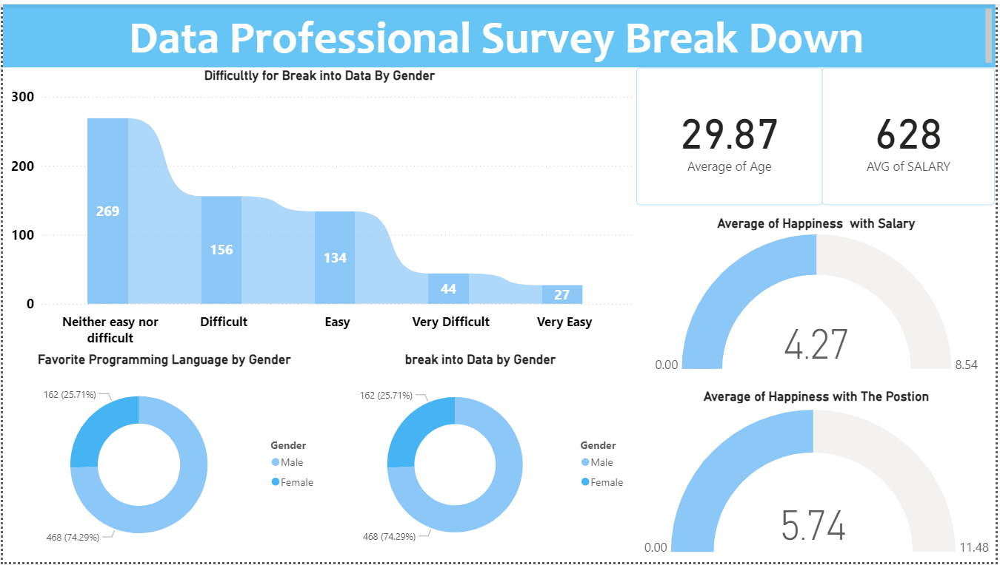

Data Professional Survey Break Down
Tools: Power BI
Introduction:
This project involves the creation of a Power BI dashboard to analyze and visualize the results of a survey conducted among data professionals. The dashboard provides insights into various aspects of the data profession, including demographics, job roles, skills, and industry trends.
Dashboard Details:
Home:
The Data Professional Survey Breakdown Dashboard aims to provide a comprehensive analysis of survey responses from data professionals. By leveraging Power BI's powerful visualization capabilities, the dashboard offers an interactive and user-friendly way to explore survey data and uncover valuable insights.
